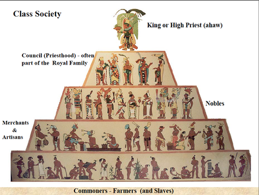

Ancient Mayan Civilisation
Delve into the mysterious world of the Ancient Mayan Civilisation, as we showcase parts of their Government,Religion, Innovations, Economy, Arts and Society.
Delve into the mysterious world of the Ancient Mayan Civilisation, as we showcase parts of their Government,Religion, Innovations, Economy, Arts and Society.

Above is a photo of the Chilam Balam, much of what we know about the Government systems of the Mayans is derived from this book. The Ancient Mayans government system was a Hierarchical system. Each city state was to be ruled by one king, and around him were his councils who were chosen from a range of noble families. The king was considered to be chosen by the gods and was considered to be the mediator between the gods and the people that lived in the civilisation. The priests were also considered to be as powerful as kings. The kings even came to the priests for advice on how to deal with a crisis, hence the priests had great control over how a city state was ruled. The king was called the “ahaw”, the military leaders were known as the “nacom” and the king’s council were known as the “batab”. At the peak of the Mayan Civilisation there was 100s of city states, each with its own king. The king was expected to serve as a military and give blood sacrifices to the gods, once a king died his child would take over no matter what the age of the child was. The king’s main responsibility however, was to ensure the continual growth and expansion of his city state.

Above is a photo of a bust of an Ancient Maya Sun God Kinich Ahau Religion was very important to the Mayan Civilisations, just like all the other major ancient civilisations, in fact the beliefs of the Mayans were very similar to that of the Aztecs and Incas. The Ancient Mayans were polytheists and each God was very important to them. In Maya mythology, Chac (sometimes spelled “Chaac”) was the god of rain and thunder, and important as a fertility and agriculture god. To the Mayans he was one of the most important God as they believed without him they would have no crops would not be fertile. Other important Gods in the Mayan Civilisation were the God of Sun (Kinich Ahau), The Maize god ( Yumil Kaxob) is representative of the ripe grain which was the base of the Mayan agriculture. These were the main Gods in Mayan societies. The Mayan people built large temples and buildings in honour of these Gods and here they offered human sacrifice as the ritual offering of nourishment to the Gods, as they believed that blood was a source of nourishment to them.

Some innovations by the Mayans were for example, the discovery of the number 0. The Mayans had come up with the number 0, thousands of years before Europeans did. They also developed accurate calendars that consisted of 365 day years. Their astronomers tracked the cycle of the sun and moon correctly, thousands of years before any other civilisation had done so. BY 700 BC they had developed a handwriting system, only 4 other ancient civilisations had done this at that time. From then onwards they continued to develop their wiring and then went on to write tens of thousands of books. They invented chocolate, herbal medicine and even a game that was similar to basketball. They had built hundreds of cities and by 600 BC the Mayan Capital City, Tikal had Schools, Libraries, Hospitals and Huge Sport Arenas.

Above is an example of the Class system pyramid of the Ancient Mayan Civilisation. Mayan Society was broken up into 5 main classes, they were: The King, Nobles, Priests, Common People or Farmers and the lowest rank was the Slaves. The most powerful position was obviousouly the King, whose power and rights were passed down his heridatry line. He was so honoured and feared that whenever he was speaking to anyone below his rank a cloth was held before his face. Priests were also held in high stead due to the fact that they were also able mathematicians, astronomers and scholars. They were quite revered and they were responible for handling the human sacrificial offerings to the God. Priests took advantage of the beliefs of the people and could manipulate who was sacrificed to the Gods. At the bottom of society are the Common People and Slaves. The Common People spent most of their lives as farmers or craftspeople. They were the people who worked long hours to help provide stability in the economy of the Mayans. Slaves were either prisoners of war, people who were caught stealing or old slaves children. These people spent their entire lives serving the nobility and were never treated fairly.

ABove is an example of Carving in Jade Stone, made by an Ancient Mayan craft maker. The Economy of the Ancient Mayan Civilisation was not very well recorded, however what we do know is that their main economy was mainly based on the production and sales of goods. Trade and agriculutre were their biggest source of income. They traded between the different state-cities of the Mayan and other Mesoamerican Civilisations, like the Aztecs and the Incas. empire, items traded include: Feathers, Salt, Flint, Obsidian, Jade and even Slaves. Craft Builders also aided the economy by making carvings and pictures out of the available resources. Trade of these resources and crafts developed through the two cities of Olmec and Teotichuan, however there was trade markets setup in most of the cities. Furthermore, through the extensive agriculutre of the Mayans, they were also able to sell their crops to the other state-cities, the main crops they grew were maize, beans and chilli peppers. Farming was the stronghold of the economy as 90% of the Mayan populous was involved in Farming, they lived in small huts and grew their crops on their small rasied platforms also know as chinampas.